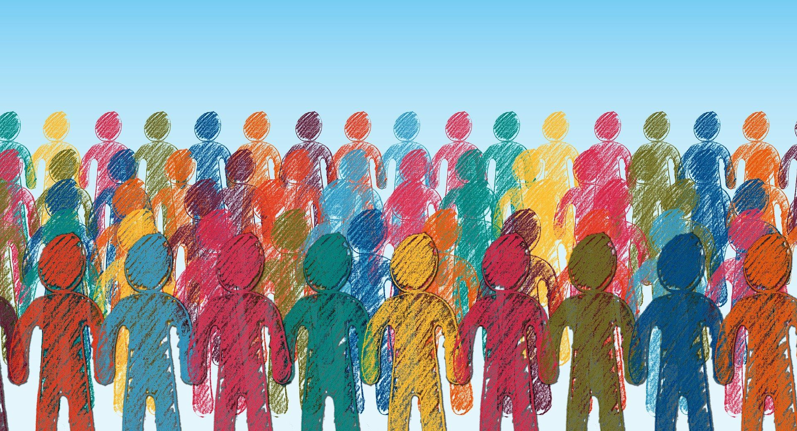
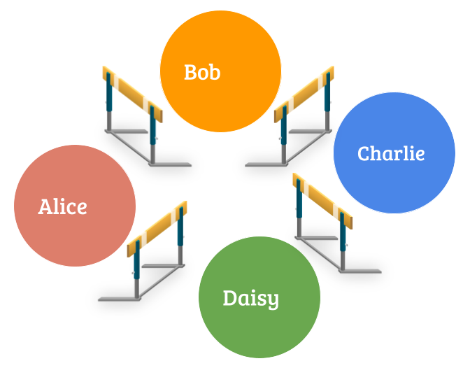
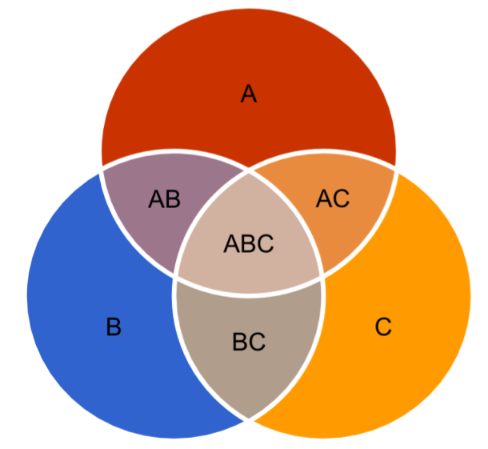

View Differently
June 10 2020
In our previous blog, The Next Big Step, we discussed the main limitation of the current implementation of Keva database. That is, we use the namespace to avoid conflicts of keys, so that users can insert whatever keys they like to the database. Think of a namespace as a bucket, you can do whatever you want in your own bucket, but you cannot touch other peoples’ buckets.
This is great, but how can different users collaborate on a project? For example, in a decentralized wiki project, how can different people work on the same wiki document? And in a decentralized “Twitter”, how do we represent the relationship of following and being followed, when they are technically isolated in their own namespaces?
The access control project in the previous blog is a possible solution, but it is quite complex to implement and very risky as it needs to make non-trivial changes to the consensus layer. And it is not flexible at all - people need to manually manage the access control.
It turns out there is a much easier solution than access control.
Change How We View Things!
Back to the wiki example, Alice, Bob and Charlie are working on the same wiki document. They are making the changes on the different or same parts of the documents. They can only work in their own namespaces, which we know is a problem. The "Access Control" feature will allow Alice to write in Bob's namespace and vice versa, but it is a complex feature to implement and is not flexible. Now, what if the Keva database allows them to view the combined result and resolve the difference, as shown in the Venn graph below? If Alice and Bob make changes on different parts, e.g. A and B in the graph, the database simply shows the content of A and B. However, they also make changes on the same part, e.g. AB in the graph. In this case, we can use a simple rule that the changes in the later block will override the changes in the early block.
For example, in block 1200, Alice sets the value of key “the greatest scientists” to “Marie Curie and Plato”, while in block 1201, Bob sets the value of the same key to “Issac Newton and Picasso”. In the combined view, the value will be shown as “Issac Newton and Picasso” as this change comes later. As the convention of the wiki project, Alice and Bob discuss and reach a consensus. In Block 1202, Alice changes it to “Marie Curie and Issac Newton” in her namespace, which will be shown in the latest view.
What is more interesting is that if you don’t like Alice and Bob’s version, you are free to choose Charlie and Daisy’s! The Keva database will give you the full flexibility of what to view. We feel that this reflects the true spirit of a decentralized web.
There will be no consensus layer change to implement this feature. All we need to do is to allow the database to combine multiple namespaces into one view without actually changing any of them. This will make it easy for people to colloborate on the decentralized database, and it is much easier and less risky to implement than access control. We are excited to make this feature available soon!
Image by Gerd Altmann from Pixabay